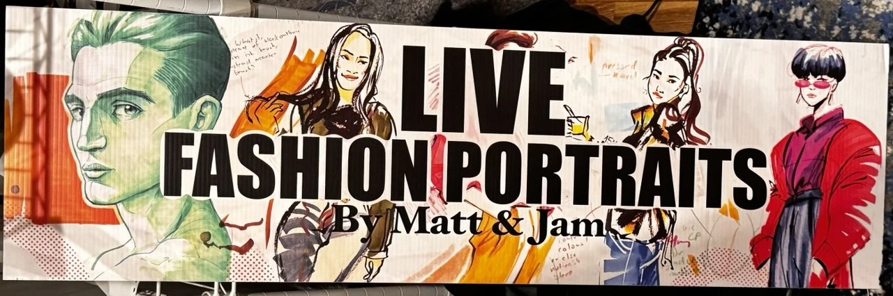

About the studio
Two artists, one pen at a time.
Signet is the Los Angeles live-event studio of Matt & Jam: fashion illustrators who believe the most memorable luxury is human attention, given generously and drawn by hand.


Our story
A signet is a personal mark.
Historically it was pressed in wax to say this is mine, made by my hand. That’s how we think about every portrait we draw. No two are alike, because no two guests are.
We trained in fashion illustration and figure drawing, and spent years drawing strangers in cafés, studios, and runway shows before bringing that practice to celebrations. Today we draw at weddings, milestone parties, and brand events throughout greater Los Angeles, working quickly but never carelessly.
[Placeholder: replace with Matt & Jam’s own bios, training, and notable clients.]
What we hold to
The Signet standard.
Made by hand
Every line is drawn live, in ink, ink wash, and alcohol marker, on archival paper. Nothing is traced, printed, or generated.
Flattering, always
Fashion illustration is the art of elegance. We draw your guests as they hope to be seen: poised, stylish, and unmistakably themselves.
Quietly professional
Insured, punctual, and styled to your event. We integrate seamlessly with your planner, venue, and timeline.
